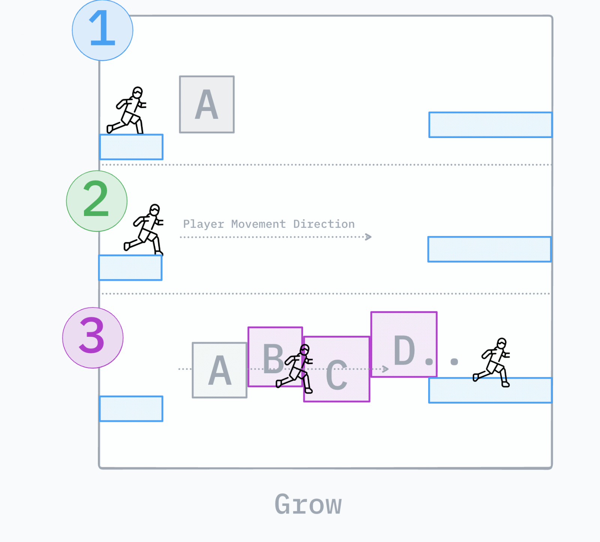

This month focused on the Grow Transformation feature across two implementations: a moving corridor wall system and an alternative spline-driven bridge system inspired by the Genshin loading bridge concept. Both were developed in C++ for performance, control, and scalability.
October Snapshot
Built and finalized the Grow Transformation system for moving corridor walls.
Added debug visualization and created designer tutorials for faster team adoption.
Prototyped and finalized an alternative spline and PCG-driven grow system inspired by a bridge-loading concept.
Resolved PCG edge stability issues and delivered stable in-game previews.
Week 1
Grow Transformation Start
I began the next architecture transformation task after completing the Move Transformation system. This new feature, the Grow Transformation system, started with a Moving Corridor Wall implementation.
The system creates a dynamic hallway effect where corridor walls advance or retract in relation to the player, simulating a compressing or shifting space. The implementation is being built with designer flexibility through controls for movement speed, travel distance, activation range, and trigger conditions.
At this stage, I focused on establishing the core logic and validating player-driven wall behavior as the technical foundation for future refinements.

Director implementation concept reference for the Grow Transformation system.
Week 2
System Finalization
I completed the requested Grow Transformation system based on the Moving Corridor Wall concept. The final implementation responds to player interaction as intended and creates a dynamic, shifting environment during traversal.
Implemented debug collider outlines for rapid iteration.
Added forward-vector visualization to inspect activation behavior in real time.
I recorded a tutorial video for designers to support onboarding and configuration.
Implemented in C++ for better runtime performance and long-term maintainability.
Grow Transformation(Default) Preview
Grow Transformation(Default) Tutorial for Designers
Week 3
Alternative Prototype
I started an alternative Grow Transformation direction based on new director feedback, inspired by the Genshin loading bridge style and potentially powered by Unreal Engine PCG for dynamic generation at scale.
Since PCG was new to me, I invested time learning the workflow while building an initial prototype in parallel. The prototype already captures the core behavior: dynamic structure formation that supports player traversal.
The current focus is improving stability, expanding customization, and making the feature easier for designers to use. As with previous systems, this implementation is in C++.
Alternative Prototype Demo 1
Alternative Prototype Demo 2
Week 4
Stable Final Version
I completed the alternative Grow Transformation system inspired by the bridge concept. The final implementation uses C++ and allows designers to define custom spline paths that drive dynamic platform growth.
Spline-defined pathing for level-specific platform generation.
Resolved side-edge formation issues by refining PCG graph settings.
Delivered stable and visually consistent output for in-game usage.
Recorded a designer tutorial for setup and customization workflows.